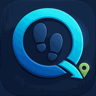

Steps GPS Route
A free, simple Android tool: your everyday steps, and GPS recording and a map to find your way on hikes and off-road 4x4 drives.
I built this app because I needed a robust, simple and free tool: one that keeps track of my everyday movement by counting steps, and that records my route and helps me stay oriented and find my way when I'm hiking or driving off-road in a 4x4. It's not a sport app, just a useful tool.


What it does
- Daily stepsToday's steps in a ring against your goal, the last 7 days, and lifetime numbers. The steps come from Android's Health Connect; the app only reads them.
- GPS tripsTap Start trip before a hike or a drive. The app records your route, on foot or at driving speed, with the screen off, until you tap Finish.
- SpotsMark a spring, a junction or a viewpoint as you go: from the app, from the notification, or from the lock screen without unlocking.
- An outdoor mapTrails, wadis and jeep tracks, peaks and hill shading. Your position with a compass cone, and a map that can turn with you.
- An offline map of IsraelDownload it once (150 MB) and the map works with no signal, with marked trails in their colors, jeep tracks, wadis and contour lines.
- Every trip on a mapColored by speed, with your spots, its distance, moving time, climb, top speed and a height chart. Walks and drives are counted separately.
- GPXShare or save any trip as a GPX file, to open it in other map and navigation apps.
Just a tool
- Not a sport or fitness app. No training plans, badges, streaks, leaderboards or feed. There's one daily step goal, which you set yourself.
- Not a health app either. It gives no health advice. Calories, "burgers burned" and the other fun numbers are rough estimates.
- Your data stays on your phone. No account, no ads, no analytics, no tracking. Nothing is sent to me or to anyone else. Location is used only while a trip records or the map is open.
- Free. No price, no in-app purchases.
The only internet use is loading the map (from OpenFreeMap, with hill shading from Mapterhorn) and downloading the offline map when you ask for it (from GitHub). Inside the offline map's area, the map needs no internet at all.
Good to know
- Android: 8.0 or newer for trips and the map; 14 or newer, with Health Connect, for steps.
- Languages: English on a phone set to English, and Hebrew (right to left) otherwise.
- Long recordings: set the app's battery use to Unrestricted, so Android doesn't stop it. If it does, you can resume the trip.